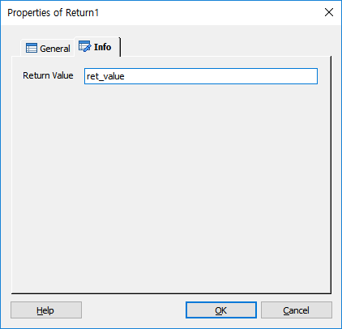

SubCall Item에 의해서 호출된 시나리오 파일에서 원래의 위치로 복귀하기 위한 아이템 입니다. 이때 동작중인 지역변수 정보는 모두 제거 되며, 지정된 Return 값이 호출한 SubCall Item의 속성 변수에 저장 됩니다.
SSFX(Service Scenario File) 에서만 사용되며, MSFX(Menu Scenario File) 에서 존재 한다면, 실행 되지 않고 다음 명령으로 진행 합니다.
ICON
PROPERTIES
 Info
Info

Return Value : 결과 값을 지정 합니다.(SubCall의 속성 변수에 값이 설정 됩니다. 예 : @Name.ret_value)
RESULT
None.
RELATED